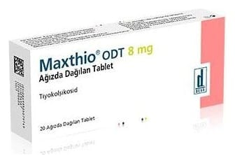

Maxthio ODT 8 mg Ağızda Dağılan Tablet ,10 Adet

Ne için kullanılır
KT · Bölüm 1MAXTHİO ODT, ağızda dağılan tablet formunda olup 8 mg tiyokolşikosid etkin maddesini içerir. Açık sarı renkli, yuvarlak, düz tabletlerdir.
MAXTHİO ODT esas olarak kas gevşetici etkinliğe sahiptir. MAXTHİO ODT, yetişkinlerde ve 16 yaştan itibaren ergenlerde ani ortaya çıkan omurilik kaynaklı ağrılı kas kasılmalarının ek tedavisinde kullanılır.